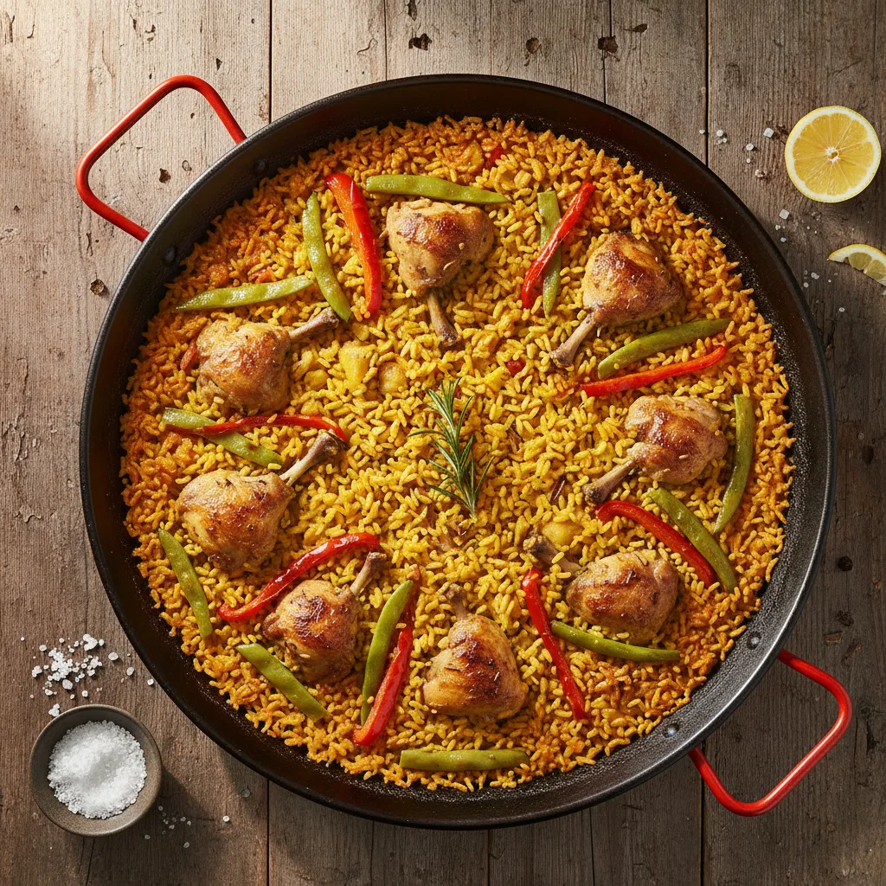
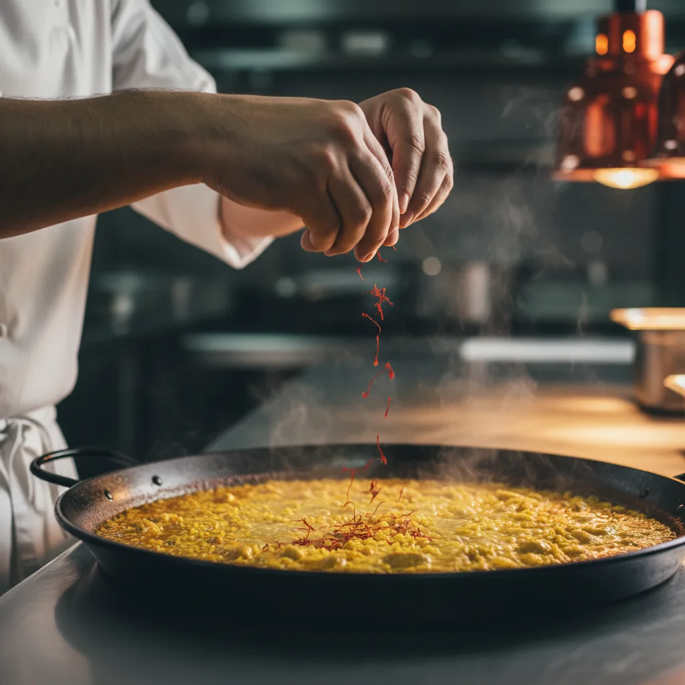
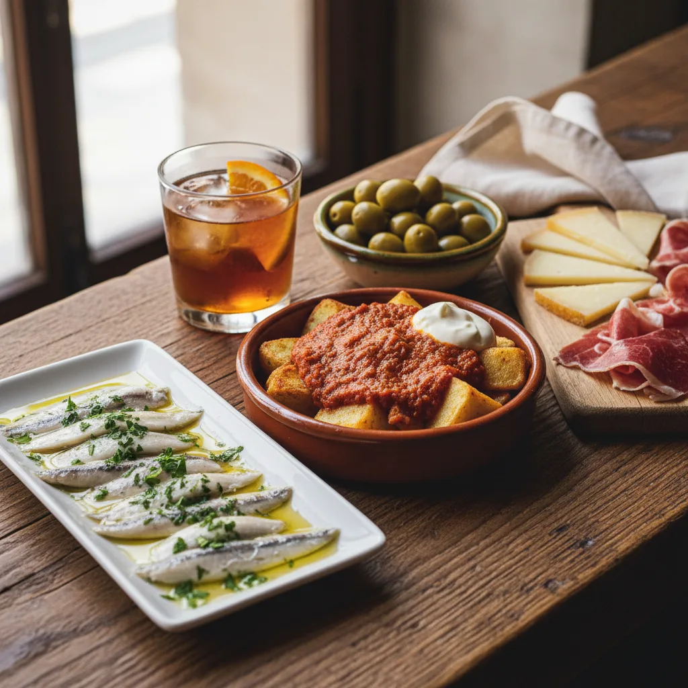
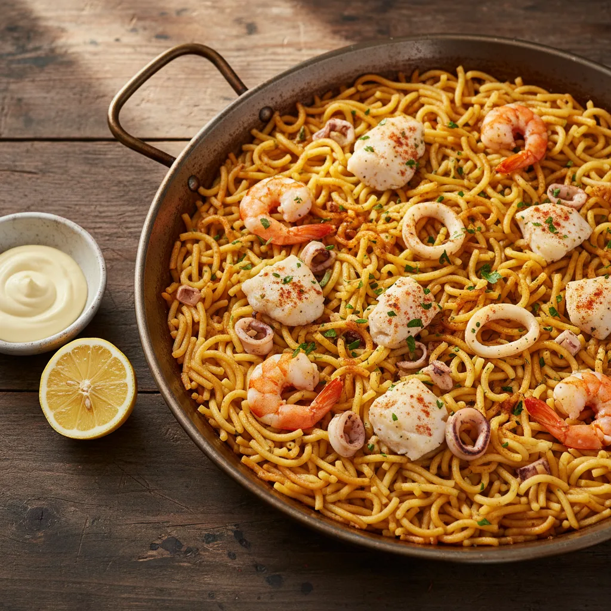
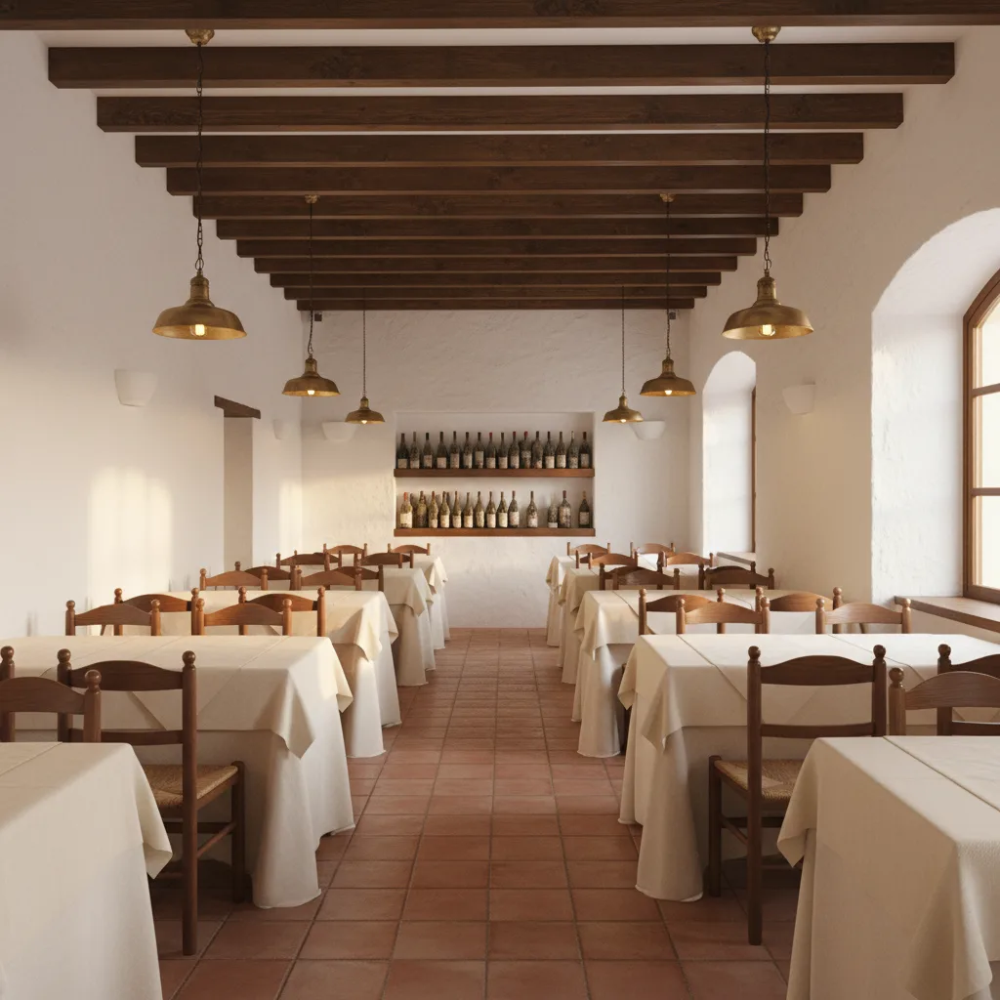
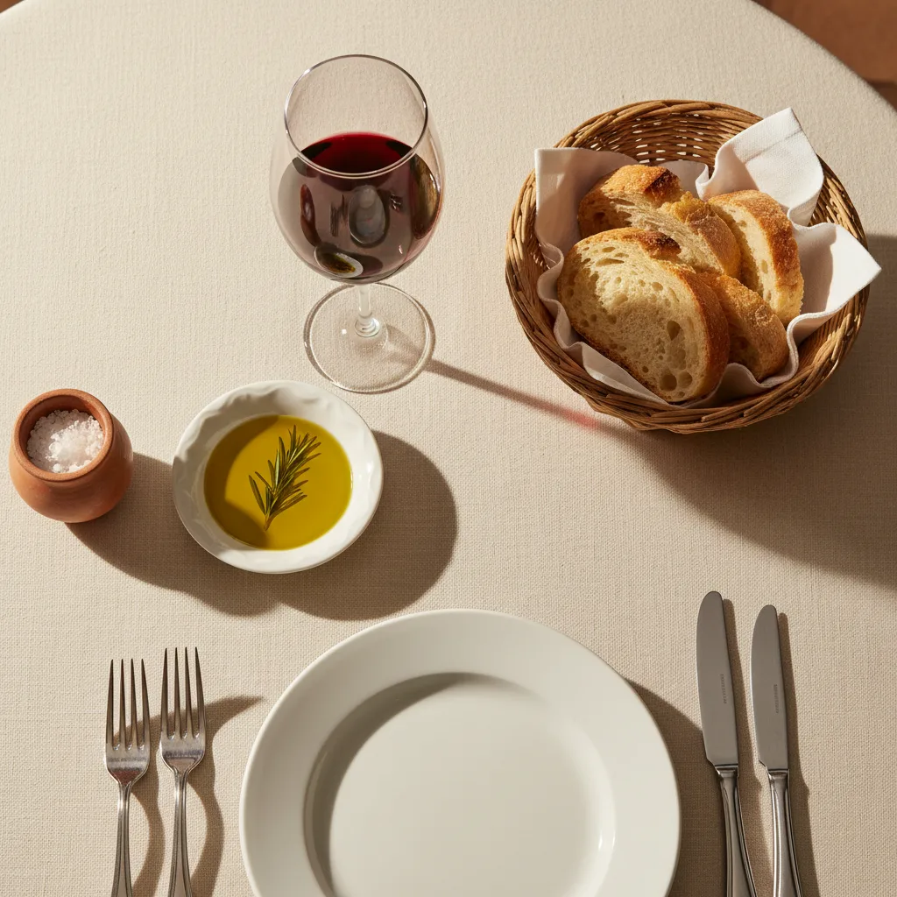
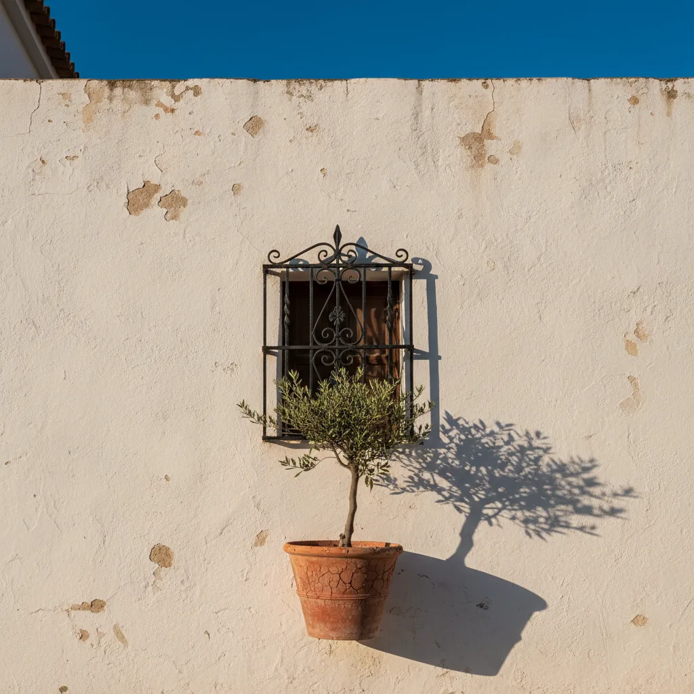
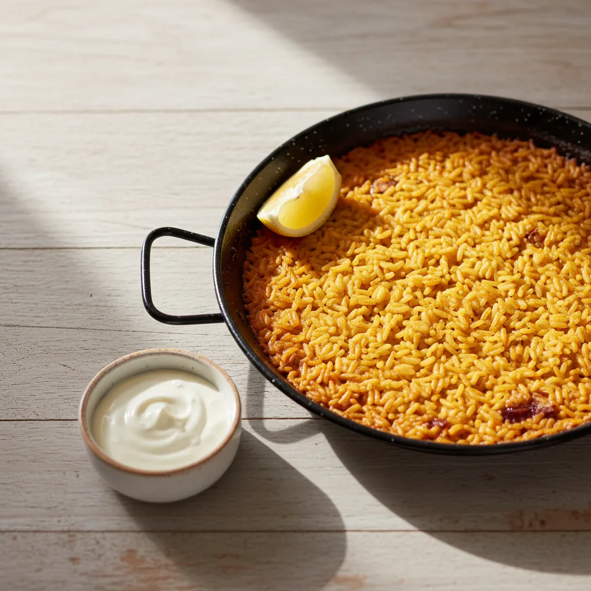

Aprendizaje en el Bar Baydal
Juan Francisco pasa diez años en el Bar Baydal de Calpe, casa donde nació la tradición del arroz del senyoret.
Entrevista La Marina · 2019
Arrocería y tapería en Calpe desde finales de 1990. Arroz del senyoret, paella alicantina, arroz a banda, arroz negro y fideuá. La paella se reserva con antelación.

Juan Francisco Martínez Pérez nació en Villanueva del Arzobispo, Jaén, en 1961. Llegó a Calpe siendo joven y pasó diez años en el Bar Baydal antes de abrir el suyo. A finales de 1990 levantó El Andaluz junto a su mujer, Rosa María.
El nombre vino de su origen. La cocina, en cambio, la fue aprendiendo aquí: el arroz alicantino, la fideuá, el caldo de pescado del puerto, las tapas que se piden de pie en la barra. Treinta y cinco años después la casa sigue en la misma esquina del Edificio Apolo, con la cocina al frente y la familia en sala.
“Tengo clientes que en su día eran niños que me pedían un helado y hoy son adultos.”Juan Francisco · entrevista en La Marina, 2019
La hija menor, Rosa, ha entrado al negocio para tomar el relevo. La modernización del local en 2016 dejó la cocina abierta a la vista y la sala con la misma calma de siempre.

Una casa que abrió a finales de 1990 y sigue en la misma esquina del Edificio Apolo. Los hechos, ordenados.
Juan Francisco pasa diez años en el Bar Baydal de Calpe, casa donde nació la tradición del arroz del senyoret.
Entrevista La Marina · 2019
A finales de 1990, Juan Francisco abre la casa en la calle Pintor Sorolla junto a su mujer, Rosa María.
Fundación de la casa
El Ayuntamiento de Calpe reconoce la trayectoria de la casa en la edición anual del 9 d'Octubre.
Ayuntamiento de Calpe
Cocina abierta a la vista y sala renovada, manteniendo el carácter de la esquina del Edificio Apolo.
Reforma interior
«Tengo clientes que en su día eran niños que me pedían un helado y hoy son adultos.»
Diario La Marina · 2019
Distinción al 10 % de restaurantes mejor valorados del mundo en base a reseñas verificadas del último año.
TripAdvisor · 2025
No hay rotación de personal aquí. La sala y la cocina llevan años trabajando juntas, y eso se nota desde que se entra.
Aprendió el oficio en el Bar Baydal de Calpe. Abrió El Andaluz a finales de 1990 y desde entonces no ha faltado un servicio.
Conocieron juntos el oficio antes de abrir la casa. Lleva la sala con el ritmo de quien lo ha hecho cinco mil servicios.
Entró al negocio para tomar el testigo familiar. Trabaja al lado de Juan y Rosa María aprendiendo cada plato de la carta.
Manda en los fuegos. Suya es la mano del arroz a banda, la fideuá y los caldos que se hacen cada mañana antes del servicio.
Treinta y dos tapas, cinco tostas, tres pescados, tres carnes y los arroces. La paella se reserva con antelación: se hace al momento, como debe ser.
Marisco pelado y fumet concentrado. «Muy rico y muy generoso», dicen los habituales. La referencia más pedida.

Solomillo de ternera, escalopa de foie, pera al horno. La firma de Juan Francisco para los días que se sale del arroz.

Pieza limpia, aceite de oliva y limón. Junto a la merluza a la vasca (17,75 €) y la zarzuela de la casa (18,50 €).
Ración entera o media. Curado largo, corte a cuchillo. La tabla más pedida de la barra.
Se piden por unidad — la manera de la casa para que pruebes varias sin tener que terminar la ración entera.

Cinco tostas, todas bajo cinco euros: jamón y huevos de codorniz, solomillo con queso de cabra, salmón, anchoas catalanas, vegetariana de sepia.
Más de cuarenta referencias en carta. Menú de niños 6,90 €. Reserva al 965 83 55 66. La paella, mejor con un día de antelación.
No nos gusta hablar de premios, pero hay dos que sí merecen mención porque vienen de quien sabe: los clientes y la propia ciudad.
Distinción otorgada al 10 % de restaurantes mejor valorados del mundo en base a las reseñas verificadas del último año.
Sello vigente, comprobable en la ficha de TripAdvisor.
Otorgada por el Ayuntamiento de Calpe en su edición anual del 9 d’Octubre, en reconocimiento a la trayectoria de la casa.
Referenciado en entrevista de La Marina (2019). Verificable en archivo municipal.




Si tu reserva incluye paella o arroz, conviene avisarlo en el comentario. Se prepara al momento y necesitamos saber el número exacto de comensales. Lunes cerrado.
Martes a domingo
13:00 – 16:00 · 19:30 – 23:30
Lunes cerrado
965 83 55 66
hola@elandalucalpe.es
[email profesional propuesto · pendiente de configurar]